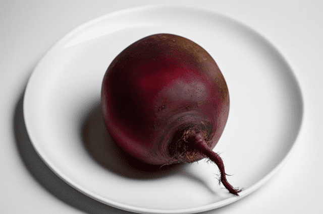

Vitaminas P (rutinas)
Šis vitaminas apima plačią bioaktyvių medžiagų grupę, vadinamą bioflavinoidais. Svarbiausia jų sąvybė - užkirsti kelią organizmo rūgštinimui ir sunaikinimui. Rutinas stiprina kraujagyslių sieneles, gerina skydliaukės veiklą. Šio vitamino trūkumas garantuoja kraujo išsiliejimus, kraujagyslių trūkinėjimus.
Šio vitamino gausu baklažanuose, rūgštynėse, žirneliuose, krapuose, petražolėse, ridikėliuose, pomidoruose, saldžiojoje paprikoje, burokėliuose.